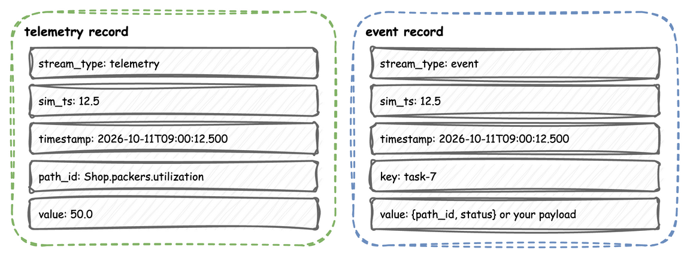
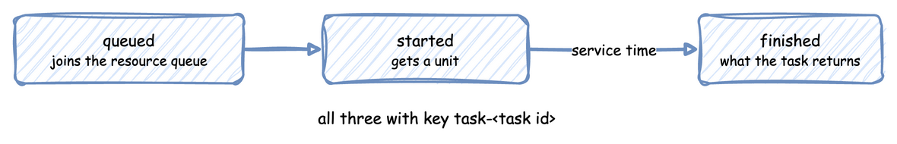

Records and Telemetry
Everything a simulation publishes is a record: a telemetry record for a metric, or an event record for something that happened to a task. The records have the shape of the TelemetryPayload and EventPayload models, and they are the same whichever way the simulation was written.
Both shapes share stream_type, sim_ts and timestamp. Telemetry names its metric in path_id, and an event names its entity in key:

Record Shape
Every egress provider, router and when predicate receives records of two shapes. Telemetry, from context.publish or publish_telemetry, is used for scalar metrics like resource utilization, queue lengths, or simulation lag:
{"stream_type": "telemetry", "sim_ts": 12.0, "timestamp": "2026-01-01T00:00:12.000", "path_id": "Shop.packers.in_use", "value": 2}
Events, from @app.task or publish_event, are used for discrete task lifecycle events (such as an order arriving, entering a queue, or finishing packing):
{"stream_type": "event", "sim_ts": 12.5, "timestamp": "2026-01-01T00:00:12.500", "key": "task-7", "value": {"path_id": "Shop.service.packing", "status": "started"}}
sim_ts is simulation seconds. timestamp is logical_start_time plus sim_ts, as an ISO string with milliseconds, and with no time zone unless logical_start_time has one. context.publish prefixes the metric name with the sim_id. Every run with an egress also publishes system.simulation.lag_seconds once per simulation second: how far the simulation clock is behind the wall clock. A router that writes only events has to drop it.
Field Values
sim_tsis rounded to three decimal places and is always a float, so simulation time 0 is published as0.0.keyandpath_idare strings.bytesandbytearrayare decoded to strings; any other type, such as anint, raises a PydanticValidationErrorat the call.valueis converted to plain JSON values before any egress sees it. A Pydantic V2 model becomes a dictionary, a datetime becomes an ISO string, and a NaN or an infinity becomesNone, in a model at any depth as in a plain dictionary.
class Reading(BaseModel):
sensor: str
celsius: float
taken_at: datetime
def readings(context: SimulationContext):
while True:
yield context.env.timeout(30.0)
reading = Reading(
sensor="spindle", celsius=float("nan"), taken_at=datetime.now()
)
# The model becomes a dict, taken_at an ISO string, and NaN becomes None
context.env.publish_event("sensor-spindle", reading)
Task Events
@app.task, and a YAML task, publish three events for each task, all with the key task-<task id>:
A task's three events follow its life through the resource:

| Event | value |
|---|---|
| queued | {"path_id": "<sim_id>.service.<service>", "status": "queued"} |
| started | {"path_id": "<sim_id>.service.<service>", "status": "started"} |
| finished | exactly what the task returns, or the YAML payload |
The finished event has no status or path_id unless the task returns them. A task with neither a service nor a resource publishes only the finished event, as soon as it is spawned. A low-level process publishes whatever keys and values it passes to env.publish_event.
Telemetry Names
| Published with | path_id |
|---|---|
context.publish(name, value) |
<sim_id>.<name> |
a YAML telemetry entry |
<sim_id>.<metric name> |
env.publish_telemetry(path_id, value) |
path_id, as given |
| the lag monitor | system.simulation.lag_seconds |
setup_egress starts the lag monitor, which publishes once every simulation second by default. Time and Pacing explains its value. A sink that should receive only events needs a router or a when predicate that drops it.
@app.telemetry_loop(interval=10.0)
def report(context: SimulationContext):
# path_id is Shop.packers.in_use: the sim_id is added in front
context.publish("packers.in_use", context.get_resource("packers").in_use)
env = DynamicRealtimeEnvironment(factor=0.0)
env.setup_egress([ConsoleEgress()])
env.publish_telemetry("plant.power_kw", 412.5) # path_id exactly as given
env.publish_event("order-17", {"status": "shipped"}) # key and value as given
What Each Sink Writes
Every sink receives the records above. What it writes differs:
| Sink | Writes |
|---|---|
ConsoleEgress |
One log line per record, [TEL] or [EVT] followed by the record without stream_type |
KafkaEgress |
The record as JSON, without stream_type unless include_stream_type=True. The message key is the record's path_id for telemetry and its key for an event |
RedisEgress |
The record as JSON in one payload field, with any __stream__ key removed |
ParquetStorageEgress, JsonlStorageEgress, IcebergStorageEgress |
Without a router, one flat row per event, with its value mapping unpacked into columns, and no telemetry. With a router, each record as the router leaves it |
PostgresEgress |
Records whose value is a dictionary, merged into a row as Connectors describes |